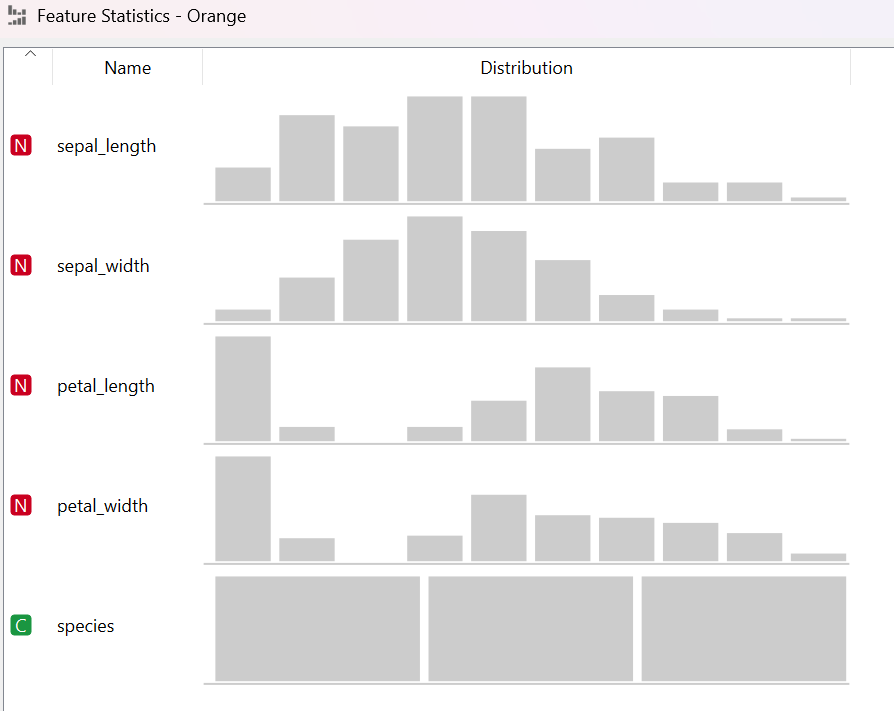
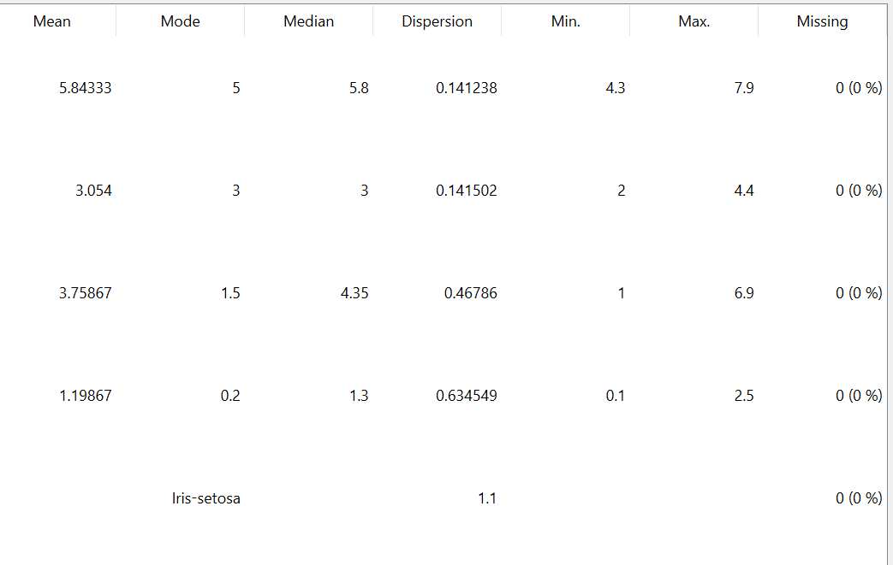

Data Iris Flower#
Eksplorasi Data Iris#
Dataset Iris Flower merupakan dataset multivariate yang diperkenalkan oleh ahli statistika dan biologi inggris, Ronald Fisher, pada tahun 1936. Dataset bunga Iris ini sangat terkenal di dunia Machine Learning yang digunakan untuk klasifikasi. Dataset Iris Flower ini didapatkan dari kaggle, berikut link kaggle dari data: https://www.kaggle.com/datasets/arshid/iris-flower-dataset
Dataset Iris Flower ini merupakan data terstruktur karena dinyatakan dalam bentuk tabel dengan atribut (kolom) dan baris.
Dataset ini terdiri dari:
150 data
5 atribut
4 atribut numerik:
sepal_length
sepal_width
petal_length
petal_width
1 atribut kategorical:
spesies
Pada atribut species ini memiliki 3 kategori, yaitu :
iris-setosa
iris-versicolor
iris-virginica.
Berikut merupakan lima data pertama untuk melihat struktur dan format data iris flower secara umum
import pandas as pd
df = pd.read_csv("IRIS.csv")
df.head()
| sepal_length | sepal_width | petal_length | petal_width | species | |
|---|---|---|---|---|---|
| 0 | 5.1 | 3.5 | 1.4 | 0.2 | Iris-setosa |
| 1 | 4.9 | 3.0 | 1.4 | 0.2 | Iris-setosa |
| 2 | 4.7 | 3.2 | 1.3 | 0.2 | Iris-setosa |
| 3 | 4.6 | 3.1 | 1.5 | 0.2 | Iris-setosa |
| 4 | 5.0 | 3.6 | 1.4 | 0.2 | Iris-setosa |
Dimensi Dataset
Dataset ini memiliki 150 baris dan 5 kolom
df.shape
(150, 5)
Struktur dan Tipe Data
Dataset Iris Flower ini memiliki 5 atribut, di antaranya 4 atribut bertipe data numerik dan 1 atribut bertipe object/kategorical
df.info()
<class 'pandas.DataFrame'>
RangeIndex: 150 entries, 0 to 149
Data columns (total 5 columns):
# Column Non-Null Count Dtype
--- ------ -------------- -----
0 sepal_length 150 non-null float64
1 sepal_width 150 non-null float64
2 petal_length 150 non-null float64
3 petal_width 150 non-null float64
4 species 150 non-null str
dtypes: float64(4), str(1)
memory usage: 6.0 KB
Pengecekan Missing Value
Pada dataset ini tidak ditemukan data kosong, sehingga dataset iris flower ini dalam kondisi bersih dan bisa dilakukan pengecekan analisis lebih lanjut.
df.isnull().sum()
sepal_length 0
sepal_width 0
petal_length 0
petal_width 0
species 0
dtype: int64
Berdasarkan pengecekan missing value, tidak ditemukan data kosong pada dataset. Tetapi berdasarkan analisis menggunakan aplikasi orange, terdapat 15 data yang terindikasi sebagai outliers. Outlier merupakan data aneh dari dataset yang ada.
Gambaran Statistik Awal
Untuk mengetahui karakteristik numerik dari masing-masing atribut, maka dilakukan perhitungan statistik deskriptif menggunakan fungsi describe()
df.describe()
| sepal_length | sepal_width | petal_length | petal_width | |
|---|---|---|---|---|
| count | 150.000000 | 150.000000 | 150.000000 | 150.000000 |
| mean | 5.843333 | 3.054000 | 3.758667 | 1.198667 |
| std | 0.828066 | 0.433594 | 1.764420 | 0.763161 |
| min | 4.300000 | 2.000000 | 1.000000 | 0.100000 |
| 25% | 5.100000 | 2.800000 | 1.600000 | 0.300000 |
| 50% | 5.800000 | 3.000000 | 4.350000 | 1.300000 |
| 75% | 6.400000 | 3.300000 | 5.100000 | 1.800000 |
| max | 7.900000 | 4.400000 | 6.900000 | 2.500000 |
Statistik Deskriptif Data Iris#
Ukuran Kecenderungan Terpusat
Pada bagian statistik deskriptif ini dilakukan perhitungan nilai untuk mengetahui ukuran pemusatan data pada masing - masing atribut dalam dataset, yaitu:
Mean (Rata- Rata)
Median (Nilai Tengah)
Modus/Mode (Nilai Sering Muncul)
Mengukur Sebaran Data (Range, Quartil, Rentang Inquartile)
Variansi dan Standar Deviasi
Skewness
Implementasi Code untuk perhitungan nilai
from scipy import stats
df=pd.read_csv("IRIS.csv", usecols=[0])
print("jumlah data ",df['sepal_length'].count())
print("rata-rata ",df['sepal_length'].mean())
print("nila minimal ",df['sepal_length'].min())
print("Q1 ",df['sepal_length'].quantile(0.25))
print("Q2 ",df['sepal_length'].quantile(0.5))
print("Q3 ",df['sepal_length'].quantile(0.75))
print("Nilai Max ",df['sepal_length'].max())
print("kemencengan","{0:.2f}".format(round(df['sepal_length'].skew(),2)))
mode=stats.mode(df)
print("Nilai modus {} dengan jumlah {}".format(mode.mode[0], mode.count[0]))
print("kemencengan " ,"{0:.6f}".format(round(df['sepal_length'].skew(),6)))
print("Standar Deviasi ","{0:.2f}".format(round(df['sepal_length'].std(),2)))
print("Variansi ","{0:.2f}".format(round(df['sepal_length'].var(),2)))
---------------------------------------------------------------------------
ModuleNotFoundError Traceback (most recent call last)
Cell In[6], line 1
----> 1 from scipy import stats
2 df=pd.read_csv("IRIS.csv", usecols=[0])
4 print("jumlah data ",df['sepal_length'].count())
ModuleNotFoundError: No module named 'scipy'
Implementasi code di atas digunakan untuk menghitung ukuran statistik deskriptif pada atribut sepal_length yang meliputi, jumlah data, mean (rata - rata), nilai minimal, Q1, Q2 (median), Q3, nilai max, kemencengan (skewness), Modus, standar deviasi, dan variansi.
Mean (Rata - Rata)#
Mean atau rata-rata merupakan ukuran pemusatan data yang diperoleh dengan menjumlahkan seluruh nilai dalam suatu data kemudian dibagi dengan banyak data. Mean digunakan untuk mengetahui nilai tengah secara umum dari keseluruhan data.
Berikut rumus untuk menghitung mean secara umum:
Keterangan :
\( \begin{aligned} \bar{x} &= \text{Mean (rata-rata)} \\ x_i &= \text{Nilai data ke-i} \\ n &= \text{Jumlah data} \\ \sum &= \text{Simbol penjumlahan} \end{aligned} \)
Pada dataset Iris Flower, nilai mean digunakan untuk mengetahui rata-rata dari masing-masing atribut numerik seperti sepal_length, sepal_width, petal_length, dan petal_width.
Median (Nilai Tengah)#
Median merupakan ukuran pemusatan data yang menunjukkan nilai tengah dari suatu data setelah data diurutkan dari yang terkecil hingga terbesar. Median digunakan ketika ingin mengetahui nilai tengah yang tidak terlalu dipengaruhi oleh nilai ekstrem (outlier).
Jika jumlah data ganjil, maka median adalah nilai tepat di tengah. Jika jumlah data genap, maka median adalah rata-rata dari dua nilai tengah.
Median Untuk Data Tunggal
Rumus Median Untuk \(N\) Ganjil :
Rumus Median Untuk \(N\) Genap :
Keterangan :
\( \begin{aligned} Me &= \text{Median} \\ x &= \text{Data yang telah diurutkan} \\ N &= \text{Jumlah data} \end{aligned} \)
Median Untuk Data Berkelompok
Keterangan :
\( \begin{aligned} Me &= \text{Median} \\ x_{ij} &= \text{Batas bawah kelas median} \\ n &= \text{Jumlah data} \\ f_{kij} &= \text{Frekuensi kumulatif sebelum kelas median} \\ f_i &= \text{Frekuensi pada kelas median} \\ p &= \text{Panjang interval kelas} \end{aligned} \)
Pada dataset Iris Flower, median digunakan untuk mengetahui nilai tengah dari masing-masing atribut numerik setelah data diurutkan, sehingga dapat memberikan gambaran pusat data yang lebih stabil dibandingkan mean ketika terdapat nilai ekstrem (outlier).
Modus/Mode (Nilai Sering Muncul)#
Modus adalah nilai yang paling sering muncul dalam suatu kumpulan data. Modus digunakan untuk mengetahui nilai yang memiliki frekuensi tertinggi dalam suatu distribusi data.
Pada data numerik, modus menunjukkan nilai yang paling banyak muncul. Sedangkan pada data kategorikal (seperti atribut species pada dataset Iris), modus menunjukkan kategori yang paling dominan.
Suatu data dapat memiliki:
Satu modus (unimodal)
Dua modus (bimodal)
Lebih dari dua modus (multimodal)
Atau tidak memiliki modus jika semua nilai muncul dengan frekuensi yang sama.
Rumus Modus data tunggal :
Pada data numerik unimodal yang cukup miring (asimetris), terdapat hubungan empiris antara mean, median, dan modus:
Ini menyiratkan bahwa mode untuk kurva frekuensi unimodal yang cukup miring dapat dengan mudah didekati jika nilai rata-rata dan median diketahui.
Rentang (Range), Quartil, and Rentang Interquartile#
Range#
Rentang (Range) merupakan ukuran penyebaran data yang menunjukkan selisih antara nilai maksimum dan nilai minimum dalam suatu dataset. Rentang memberikan gambaran seberapa luas variasi data secara keseluruhan.
Rentang adalah selisih antara nilai terbesar (maks ()) dan terkecil (min ()).
Keterangan :
\( \begin{aligned} R &= \text{Rentang (Range)} \\ X_{max} &= \text{Nilai maksimum} \\ X_{min} &= \text{Nilai minimum} \end{aligned} \)
Kuartil (Quartile)#
Kuartil adalah ukuran statistik yang membagi data yang telah diurutkan menjadi empat bagian yang sama besar. Kuartil digunakan untuk melihat distribusi dan penyebaran data secara lebih detail.
Terdapat tiga kuartil utama:
Q1 (Kuartil 1 / Lower Quartile) → 25% data berada di bawah nilai ini
Q2 (Kuartil 2 / Median) → 50% data berada di bawah nilai ini
Q3 (Kuartil 3 / Upper Quartile) → 75% data berada di bawah nilai ini
Interkuartil (Interquartile)#
Rentang Interkuartil (IQR) adalah ukuran penyebaran data yang menunjukkan selisih antara kuartil ketiga dan kuartil pertama. IQR menggambarkan penyebaran 50% data tengah dan sering digunakan untuk mendeteksi outlier.
Rumus Interquartile:
Data dikatakan outlier jika :
Pada dataset Iris Flower, rentang digunakan untuk mengetahui selisih nilai maksimum dan minimum dari setiap atribut numerik. Kuartil membantu memahami distribusi data dalam empat bagian, sedangkan IQR digunakan untuk mengukur penyebaran data tengah serta mendeteksi adanya outlier.
Variansi dan Standar Deviasi#
Variansi dan standar deviasi adalah ukuran penyebaran data yang menunjukkan sejauh mana nilai-nilai dalam dataset menyebar dari nilai rata-rata.
Standar Deviasi yang rendah berarti bahwa pengamatan data cenderung sangat dekat dengan rata-rata
Standar Deviasi yang tinggi menunjukkan data tersebar di sejumlah nilai-nilai besar.
Variansi#
Untuk atribut numerik \(X\) dengan \(N\) pengamatan \(x_1, x_2,...,x_N,\) variansi populasi \((𝜎^2)\) dirumuskan sebagai berikut :
Standar Deviasi#
Standar deviasi \((𝜎)\) adalah akar kuadrat dari variansi. Sifat dasar dari standar deviasi sebagai ukuran penyebaran data adalah sebagai berikut:
Ukuran \(σ\) mengeukur sebaran disekitar rata-rata dan harus dipertimbangkan bila rata-rata dipilih sebagai ukuran pusat data
\(σ = 0\) hanya jika tidak ada penyebaran data, hanya terjadi ketika semua pengamatan memiliki nilai sama, Jika tidak maka \(σ > 0\).
Pada dataset Iris Flower, variansi dan standar deviasi digunakan untuk mengukur sebaran nilai pada atribut numerik (sepal_length, sepal_width, petal_length, petal_width). Nilai standar deviasi yang rendah menunjukkan bahwa data terkonsentrasi di sekitar mean, sedangkan nilai tinggi menunjukkan variasi data yang lebih besar.
Skewness (Kemencengan)#
Skewness (kemencengan) adalah ukuran derajat distorsi dari distribusi data dibandingkan dengan kurva normal simetris. Skewness digunakan untuk mengetahui apakah distribusi data miring ke kanan, ke kiri, atau simetris.
Skewness = 0 → distribusi simetris (normal)
Skewness > 0 → distribusi miring ke kanan (ekor di kanan lebih panjang)
Skewness < 0 → distribusi miring ke kiri (ekor di kiri lebih panjang)
Untuk menghitung derajat distorisi dapat menggunakan Koefisien Kemencengan Pearson yang diperoleh dengan menggunakan nilai selisih rata-rata dengan modus dibagi simpangan baku. Koefisien Kemencengan Pearson dirumuskan sebagai berikut
dengan
maka
\( \text{Keterangan:} \\ \begin{aligned} sk & = \text{Koefisien kemencengan (skewness)} \\ \bar{X} & = \text{Mean (rata-rata)} \\ Me & = \text{Median (nilai tengah)} \\ Mo & = \text{Modus (nilai paling sering muncul)} \\ s & = \text{Standar deviasi} \\ \bar{X} - Mo & \approx 3 (\bar{X} - Me) \quad \text{(hubungan empiris Pearson)} \end{aligned} \)
Visualisasi#
Berikut merupakan visualisasi feature statistik dari data iris flower

